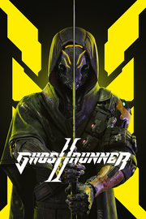

Ghostrunner 2
Detalles
|  | |
| Tiempo de juego | No Jugado |
| Última actividad | Nunca |
| Añadido | 11/6/2024 15:27:55 |
| Modificado | 11/6/2024 23:33:02 |
| Estado de finalización | No Jugado |
| Librería | Playnite |
| Fuente | 2TB DATOS |
| Plataforma | PC (Windows) |
| Fecha de lanzamiento | 10/26/2023 |
| Puntuación de la Comunidad | 80 |
| Puntuación de la Crítica | 81 |
| Puntuación de usuario | |
| Género | Acción Aventura Estrategia |
| Desarrollador | One More Level |
| Editor | 505 Games |
| Característica | Cloud Saves Compat. Parcial Con Mando Logros De Préstamo Familiar Tablas De Clasificación De Un Jugador |
| Enlaces | Punto de encuentro Discusiones Guías Noticias Página de la tienda PCGamingWiki Logros |
| Tag | Acción Acción y aventura Aventura Ciberpunk Combate Combate con vehículos Corredores De ritmo rápido Difíciles Espadas Estrategia Hack and slash Lucha Motos Música Ninjas Posapocalípticos Primera persona Un jugador Violentos |
Descripción
Correrá la sangre en el esperado juego de acción en primera persona cuya historia transcurre un año después de los acontecimientos de Ghostrunner. Adéntrate en este futuro ciberpunk postapocalíptico que sigue a la caída de la Maestra de las Llaves, la tirana que gobernaba la Torre Dharma, último refugio de la humanidad. Jack ha vuelto para enfrentarse a la violenta secta de IA que se ha congregado fuera de la Torre Dharma y dar forma al futuro de la humanidad.
Con increíbles mecánicas de combate con katanas, una exploración más profunda del exterior de la Torre Dharma, niveles no lineales algunos en moto, nuevos modos y la acción que te gustó de Ghostrunner. Además, las peleas contra jefes son más interactivas, lo que permite a los jugadores elegir cómo sobrevivir contra los contrincantes más fuertes.

Sé el Mejor Ciber Ninja
Ghostrunner 2 introduce habilidades que permiten más creatividad y accesibilidad al enfrentarse a los retos. Sin embargo, en Ghostrunner 2, los enemigos se comportan de forma única según las habilidades que se usen contra ellos, y cada encuentro es un nuevo desafío. El sistema de progreso del jugador se ha renovado por completo, permitiendo personalizar y experimentar con la jugabilidad.

Funciones inmersivas y alucinantes
Domina el Cybervoid, si crees que sobrevivirás. Enfréntate a nuevos enemigos desafiantes mientras atraviesas entornos interactivos con barriles explosivos, muros destructibles, entes neutrales que te serán de ayuda y un sinfín de mejoras para hacer del combate algo más emocionante y novedoso. ¿No te basta con esto? Métete aún más en la historia con el nuevo sistema de diálogos.

Sonidos del Cybervoid
Salva la humanidad con estilo aniquilando a tus oponentes mientras escuchas a la cautivadora banda sonora synthwave con nueva música de Daniel Deluxe, We Are Magonia, Gost, Dan Terminus y Arek Reikowski.